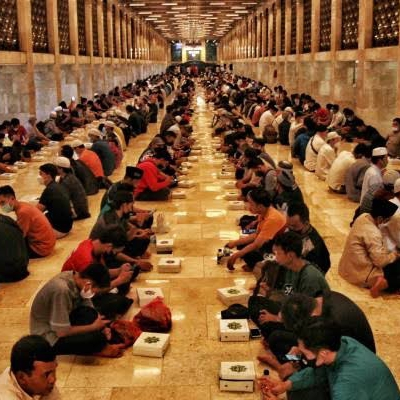
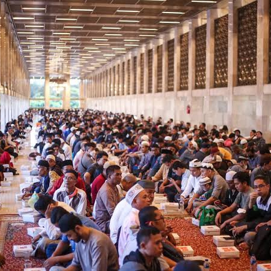
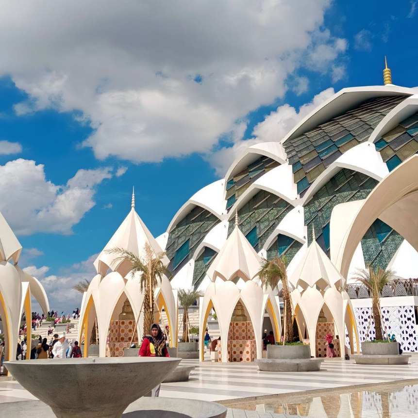
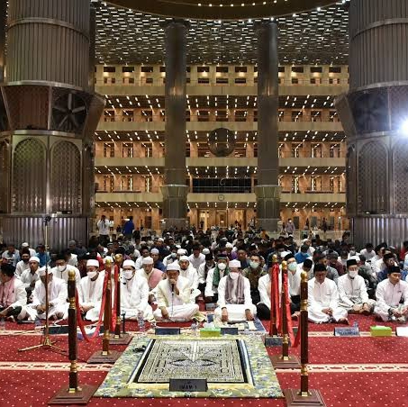
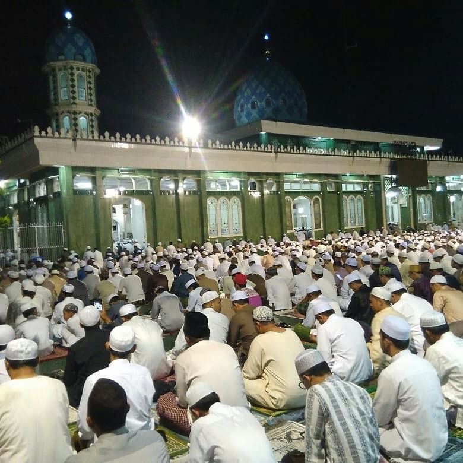

Gallery Foto






Gallery Foto
Deskripsi Fasilitas
Mesjid Akbar yang berada di Sawangan Depok ini menyediakan fasilitas atau sarana dan perlengkapan umum masjid yang cukup lengkap diantaranya ruangan sholat yang luas, digunakan juga untuk aktifitas pengajian, mihrab tempat imam Ketika sholat berjamaah, mimbar untuk khatib yang berceramah, perlengkapan sholat seperti mukena, tempat wudhu, toilet, terdapat juga kantor sekretariat masjid, dan parkiran yang cukup luas
Alamat & Peta Lokasi
Terletak di Kecamatan Beji, Kota Depok.
Testimony & Komentar
Pengurus mesjid
Mesjid ini sangat menarik dipandang. Tempat yang damai untuk salat sambil rehat. Termasuk masjid yang megah, Alhamdulillah nyaman salat di sini.
Pejabat 1
Masjid ini berada di permukiman dan dekat dengan apartemen,bersih rapih dan cukup besar tempatnya juga adem
Warga 1
Masjid yang sangat nyaman untuk beribadah & beristirahat sejenak, Di bulan ramadhan suka ada takjil buat musafir. Barakallah